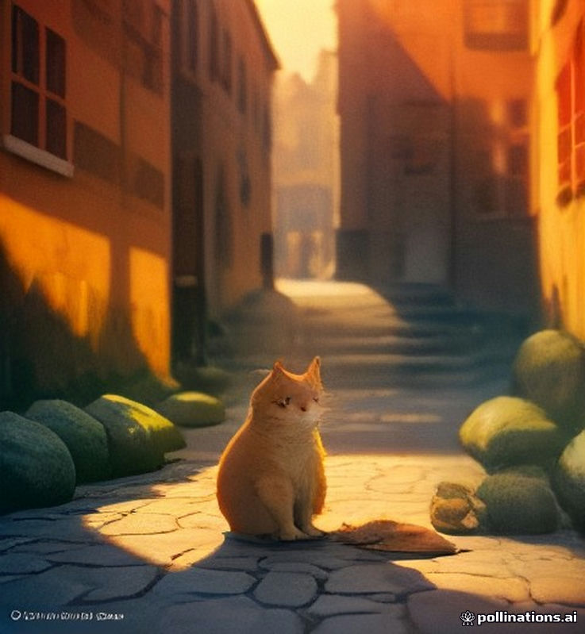
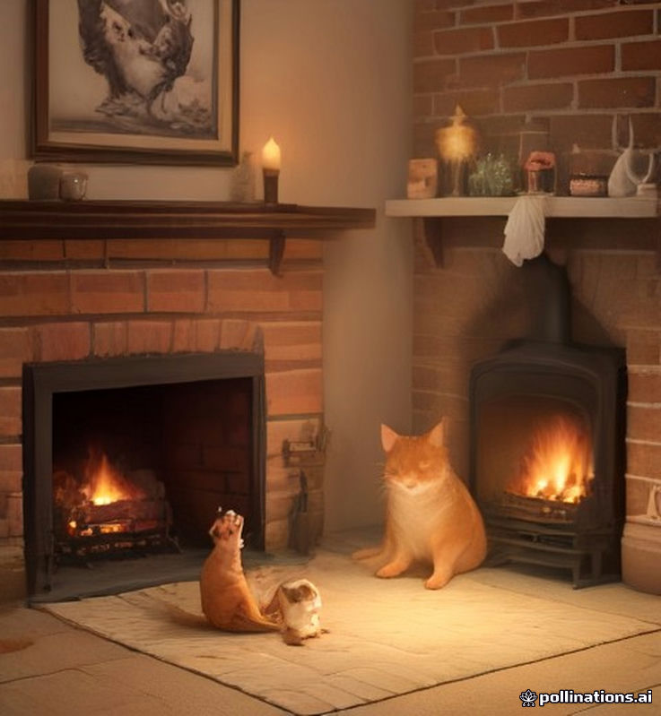
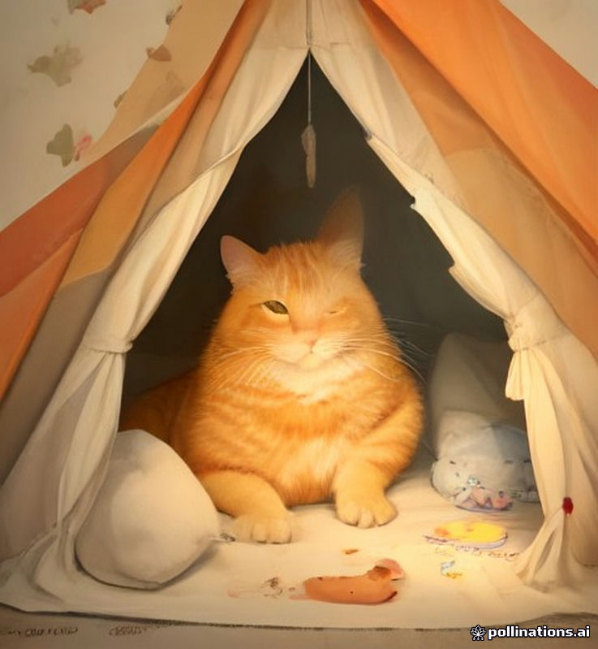
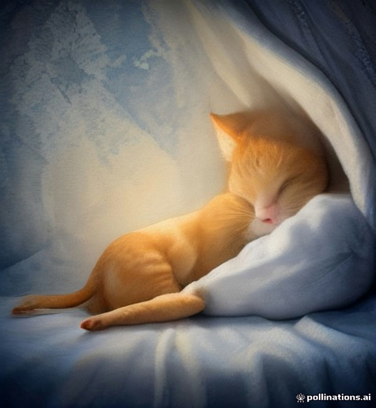

When the autumn air drops to six chilly degrees, Loki and Pip share their favorite cozy secrets for staying warm.

The air outside was six crisp degrees, cold enough to turn every exhaled breath into a tiny phantom cloud. Loki adjusted his teal scarf while Pip pulled his little woolly hat down tight over his mouse ears. "Step one of staying warm," declared Loki, trotting toward the sunlit corner of the plaza, "is catching where the morning sun leaves its warm yellow squares." Pip squeaked in agreement as they sat together on the sun-baked cobblestones, absorbing every cozy beam before the clouds drifted over.

When the sun hid behind a silvery cloud, step two began inside the cozy kitchen. Loki carefully stirred a kettle of spiced chamomile tea over the glowing hearth. Pip held two wooden spoons, tapping a cheerful rhythm on the counter while the water bubbled. They poured the brew into mugs—a large ceramic cup for Loki, and a hollowed acorn cap for Pip. Holding the warm cups felt like holding a sleepy little sun right in their paws.

Step three was their true masterpiece: building the Great Quilt Cave. Loki gathered every patchwork blanket, soft knit throw, and velvet pillow from the studio. Pip scurried underneath as the chief architect, pushing cushions into place with his nose. Together, they constructed a towering fabric fortress right in front of the window. Inside, the six-degree chill couldn't reach them at all. It was dark, soft, and smelled delightfully like dried lavender and sweet cinnamon toast.

Finally came step four, the best secret of all. Loki curled into a tight orange ring inside their quilt fort, tucking his chin over his teal scarf. Pip nested right into the warm fur behind Loki's ear, purring like a tiny soft motor. "You know, Pip," whispered Loki, closing his green eyes, "tea and sunshine are lovely, but cozying up together is what really keeps the cold away." Outside, the cool wind blew through Loki's Town, but inside, two friends were completely warm.